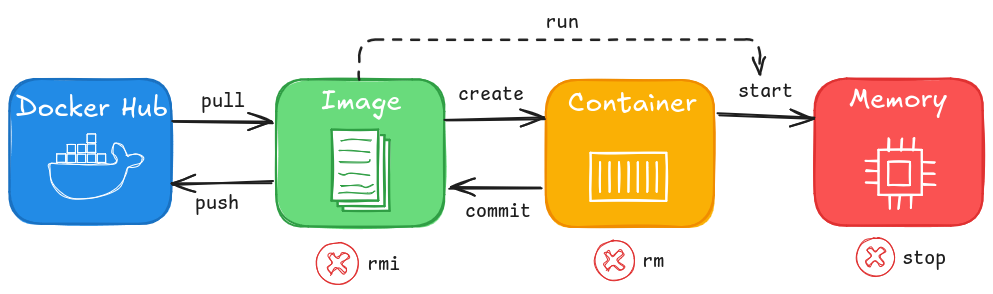

Fundamentos y usos prácticos de Docker
Clase 2 : Conceptos básicos de imágenes Docker
Temas de clase 2
Conceptos básicos de imágenes Docker
Objetivos de la clase
Objetivos clase de hoy
- Comprender que es una imágen
- Saber diferenciar contenedores e imágenes.
- Interactuar con la CLI de Docker y usar comandos básicos
Conceptos básios de Docker:
Imágen, registry y contenedor
¿Qué es una imágen Docker?
Una imagen de Docker es una plantilla de solo lectura que incluye todos los archivos, binarios, bibliotecas y configuraciones para ejecutar un contenedor. Por lo tanto, un contenedor de Docker es una imágen de Docker instanciada (en ejecución).
Hay dos cosas importantes a tener en cuenta sobre las imágenes:
- Son inmutables: Una vez que una imágen es creada NO es posible modificarlas. Solo podemos crear una nueva imágen o agregar cambios a partir de dicha imágen en una nueva.
- Están compuestas por capas: Cada capa representaba un conjunto de cambios en el sistema de archivos que agregan, eliminan o modifican archivos.
 Ref: Docker Docs, what is an image
Ref: Docker Docs, what is an image
¿Qué es una registry?
Un Docker Registry es un servicio que permite almacenar y distribuir imágenes de Docker. Docker Hub es el registro público más conocido, aunque no es el único disponible.
Los registros de Docker ofrecen un amplio catálogo de imágenes listas para descargar y la opción de subir nuestras propias imágenes, ya sea para compartirlas o utilizarlas posteriormente. Si preferimos mantener nuestras imágenes de forma privada, algunos registros pueden requerir suscripciones de pago.
Además, es posible configurar registros privados, lo que nos permite gestionar nuestras imágenes de Docker de manera segura dentro de nuestra organización.
Registry: Dockerhub
Una búsqueda "Linux" trae muchos resultados. Estando Alpine, Ubuntu, Debian y RockyLinux entre los mas populares. Es posible usar la CLI para buscar imágenes con el comando:
Es posible usar la CLI para buscar imágenes con el comando: docker search
Consultas
Contenedores y Docker CLI
Comandos básicos
Contenedores: generalidades
- Los contenedores se crean a partir de imágenes.
- Si al intentar correr un contenedor, la imagen no está descargada, se descargará automáticamente de la registry
- De una misma imagen, se pueden crear múltiples contenedores que pueden ejecutarse simultáneamente.
- Por defecto, los contenedores No son persistentes y la info guardada dentro de ellos se pierde al finalizar la ejecución.
- Durante su ciclo de vida, los contenedores pasan por diferentes estados.
Comandos básicos
La Docker CLI es la interfaz de línea de comandos de Docker, donde podemos ejecutar comandos para gestionar contenedores e imágenes. Una vez instalado Docker, podemos utilizar la CLI desde una terminal, como PowerShell o Bash para interactuar con Docker.
Descargar imágen
Con el comando docker pull descargamos una imágen de la registry que tenemos configurada. Por defecto irá a buscar la imágen a Docker Hub.
docker pull IMAGE:TAG
docker pull alpine
Salida del comando
$ docker pull alpine
Using default tag: latest
latest: Pulling from library/alpine
Digest: sha256:4bcff63911fcb4448bd4fdacec207030997caf25e9bea4045fa6c
Status: Downloaded newer image for alpine:latest
docker.io/library/alpine:latest
Listar imágenes
docker images
Imágenes descargadas
docker images
REPOSITORY TAG IMAGE ID CREATED SIZE
nginx 1.29.1-bookworm 33e0bbc7ca9e 2 weeks ago 279MB
nginx 1.29.1-alpine 42a516af16b8 2 weeks ago 79.3MB
alpine latest 4bcff63911fc 6 weeks ago 12.8MB
Observar la diferencia de tamaño de cada imágen de nginx. Se trata de la misma versión de nginx 1.29.1 pero cambia la imágen base, una está basada en Alpine Linux y la otra en Debian 12 (Bookworm).
Docker Docs: Image lsEjecutar un contenedor
El comando docker run corre un nuevo contenedor. Descargando la imágen (pull) si no se encuentra previamente descargada.
docker run [opciones] [imagen] [comando]
Ejemplos
docker run hello-world # Iniciará el hello-world de Docker
docker run -it ubuntu bash # Iniciará una bash interactiva
Como se puede ver en el segundo ejemplo, el último parámetro es el comando que ejecutará un contenedor. ¿Qué pasa si ejecutamos el siguiente comando?
docker run ubuntu ls /
Comandos mas utilizados de Docker
Listar contenedores
docker container ps # Contenedores en ejecución
docker ps # Contenedores en ejecución abreviado
docker ps -a # Todos los contenedores
docker ps -a
CONTAINER ID IMAGE COMMAND CREATED STATUS NAMES
397b24009eac ubuntu "bash" 6 seconds ago Up 5 seconds infallible_jemison
97476377f815 hello-world "/hello" About an hour ago Exited (0) About an hour ago bold_rosalind
Si no es especificado el name al momento de correr el container, se creará un nombre aleatorio.
Docker Docs: container ls | Docker Docs: Container Status
docker container ps
El comando docker container ps o docker ps nos brinda la siguiente información relevante.
- CONTAINER ID: Es un identificador único (hash) asignado a cada contenedor, utilizado para diferenciarlo de otros contenedores en el sistema.
- IMAGE: Muestra el nombre de la imagen desde la cual se ha creado y está corriendo el contenedor.
- COMMAND: Indica el comando que se ejecutó dentro del contenedor al iniciarlo.
- CREATED: Indica el tiempo transcurrido desde que el contenedor fue creado.
- STATUS: Refleja el estado actual del contenedor, como si está en ejecución, detenido, o en otro estado.
- PORTS: Lista los puertos que el contenedor está escuchando y aquellos en el host que están redirigidos al contenedor. Este concepto se explicará más a fondo al trabajar con contenedores que interactúan mediante la red.
- NAMES: Muestra el nombre asignado al contenedor. Si no se especifica un nombre al crear el contenedor, Docker le asigna uno de forma aleatoria, lo que permite una identificación alternativa además del ID.
Mas comandos
| Comando | Descripción | Uso |
|---|---|---|
docker stop |
Detiene uno o varios contenedores | docker stop CONTAINERS (name o ID) |
docker start |
Inicia un contenedor | docker start [options] CONTAINER |
docker restart |
Reinicia uno o mas contenedores | docker stop CONTAINER |
docker rename |
Renombra un contenedor | docker rename CONTAINER NEW_NAME |
docker rm |
Elimina uno o mas contenedores | docker rm [options] CONTAINER |
Consulte la Docker CLI Refence para un listado completo.